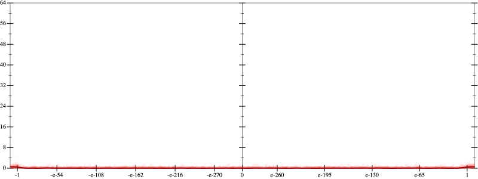
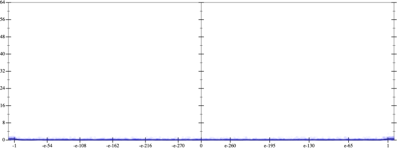
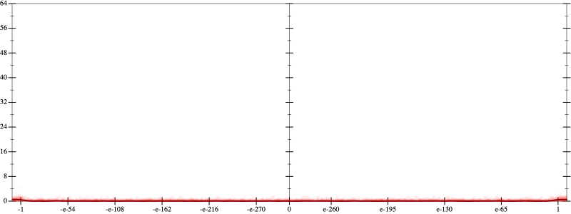
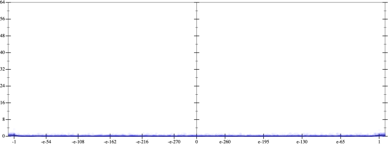
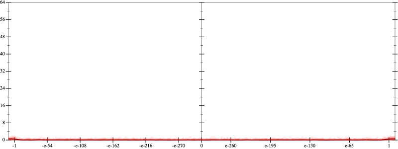
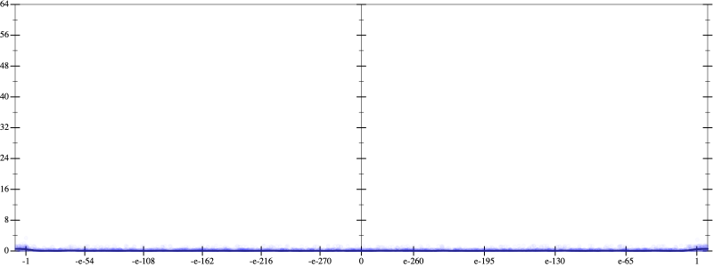

Error
 
Bits error versus x
Bits error versus x
Results
Initial program 0.1
Time bar (total: 20.8s)Debug log
herbie shell --seed 807425473
(FPCore (x)
:name "5"
:pre (and (>= x -10000000000.0) (<= x 10000000000.0))
(+ (+ (* 120.0 x) (* -160.0 (* (* x x) x))) (* 32.0 (* (* (* (* x x) x) x) x))))